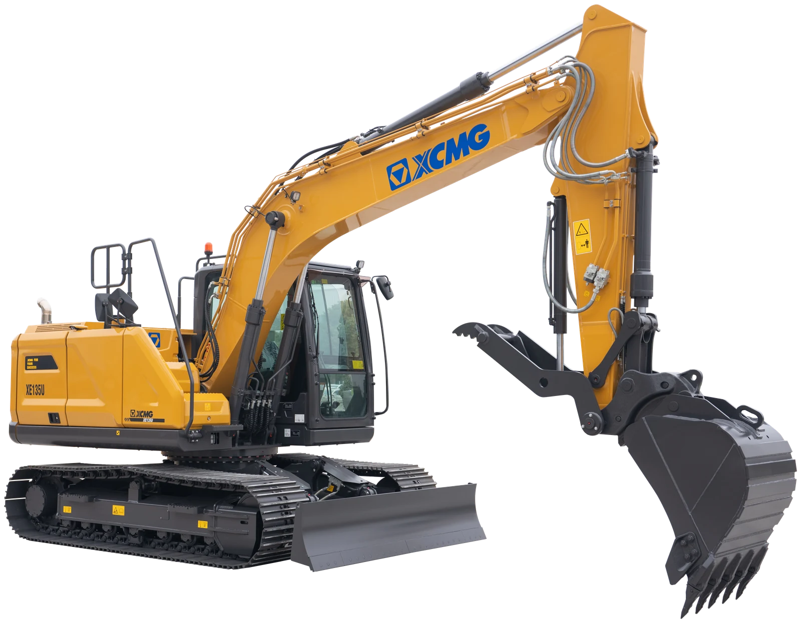

狭窄空间 / 市政庭院
工况表现：小松 PC130LC-11 94.7 分；XCMG 50.9 分，第 8，距领先产品 43.8 分。
主要差距项：尾部回转半径、整机运输长度。
配置项累计贡献：XCMG 3 分，配置项累计贡献最高。
本页按照统一口径展示参数、标选配、典型工况、配置贡献、差距来源和提升模拟。全部结论可追溯至原始数据表和来源登记。

评分口径：参数综合分 65% + 标选配综合分 35%；工况评分单独展示，不重复计入总体分。
覆盖率低于 60% 的产品不进入排名，仍在右侧表格中保留并标记为“数据不足”。
对标参照：总体排名第一的参考产品为 卡特 313；单项差距主要集中在 最大地面挖掘半径、尾部回转半径、最大挖掘半径、最大挖掘深度 等具体指标。
硬参数差距：
配置差距：
| 产品 | 总体 | 参数 | 配置 | 数据覆盖 | 完整度等级 |
|---|---|---|---|---|---|
| 卡特 313 | 59.9 | 65.4 | 49.8 | 89% | 中 |
| 斗山 DX140LC-7K | 51.7 | 56.7 | 42.5 | 95% | 高 |
| 神钢 SK130LC-11 | 51.1 | 61.6 | 31.5 | 93% | 高 |
| 现代 HX140AL | 48.5 | 56.1 | 34.4 | 95% | 高 |
| 沃尔沃 EC140E | 46.5 | 45.8 | 47.8 | 96% | 高 |
| 迪尔 130P | 39.3 | 48.1 | 23 | 91% | 高 |
| XCMG XE135U | 35.9 | 44.4 | 20.2 | 93% | 高 |
| 三一 SY135C | 32 | 41.4 | 14.4 | 89% | 中 |
| 小松 PC130LC-11 | 31.3 | 42 | 11.3 | 93% | 高 |
默认显示 XCMG 与工况领先产品；点击图例可增加或取消品牌，全部取消后恢复全品牌展示。
排名口径：工况字段覆盖率低于 60% 的产品不进入正式排名；缺失项仍保留在指标明细中。
工况表现：小松 PC130LC-11 94.7 分；XCMG 50.9 分，第 8，距领先产品 43.8 分。
主要差距项：尾部回转半径、整机运输长度。
配置项累计贡献：XCMG 3 分，配置项累计贡献最高。
工况表现：斗山 DX140LC-7K 83.8 分；XCMG 22.6 分，第 6，距领先产品 61.2 分。
主要差距项：最大挖掘深度、最大挖掘半径、最大地面挖掘半径。
配置项累计贡献：斗山 DX140LC-7K 16.8 分；XCMG 9.6 分，差 7.2 分。
工况表现：现代 HX140AL 69.7 分；XCMG 55.4 分，第 3，距领先产品 14.3 分。
主要差距项：最大卸载高度、系统流量、行走速度（高速）。
配置项累计贡献：XCMG 7 分，配置项累计贡献最高。
工况表现：XCMG 78.9 分，排名第 1。
主要差距项：系统流量、卸油管路。
配置项累计贡献：XCMG 23 分，配置项累计贡献最高。
工况表现：神钢 SK130LC-11 87.9 分；XCMG 35.2 分，第 9，距领先产品 52.7 分。
主要差距项：接地比压、最大牵引力。
配置项累计贡献：配置字段覆盖不足，暂不比较。
工况表现：小松 PC130LC-11 68.9 分；XCMG 38.9 分，第 9，距领先产品 29.9 分。
主要差距项：远程信息处理系统、自动停机、操作重量。
配置项累计贡献：斗山 DX140LC-7K 29 分；XCMG 14 分，差 15 分。
工况特点：看重窄机身、短尾回转、较小运输尺寸和贴边作业能力。
有益配置：可伸缩底盘、动臂偏摆、推土铲偏摆和安全摄像头有助于庭院、市政和受限空间作业。
| 类型 | 关键项 | 权重 |
|---|---|---|
| 参数 | 整机运输宽度 | 18% |
| 参数 | 整机运输长度 | 12% |
| 参数 | 尾部回转半径 | 24% |
| 配置 | 报警灯 | 3% |
| 指标/配置 | 类型 | 权重 | 对工况影响 | XCMG XE135U | 卡特 313 | 迪尔 130P | 小松 PC130LC-11 | 神钢 SK130LC-11 | 沃尔沃 EC140E | 现代 HX140AL | 斗山 DX140LC-7K | 三一 SY135C |
|---|---|---|---|---|---|---|---|---|---|---|---|---|
| 整机运输宽度 | 参数 | 18% | 越窄越适合入户、园林和人行道受限空间。 | 2590100分贡献 31.6 · 有效数据 | 2590100分贡献 31.6 · 有效数据 | 2590100分贡献 31.6 · 有效数据 | 2590100分贡献 31.6 · 有效数据 | 2590100分贡献 31.6 · 有效数据 | 2590100分贡献 31.6 · 有效数据 | 2590100分贡献 31.6 · 有效数据 | 2590100分贡献 31.6 · 有效数据 | 2590100分贡献 31.6 · 有效数据 |
| 整机运输长度 | 参数 | 12% | 短车身转场和狭小现场调头更灵活。 | 778066.9分贡献 14.1 · 有效数据 | 778066.9分贡献 14.1 · 有效数据 | 770083.4分贡献 17.6 · 有效数据 | 7620100分贡献 21.1 · 有效数据 | 777068.9分贡献 14.5 · 有效数据 | 772079.3分贡献 16.7 · 有效数据 | 783056.5分贡献 11.9 · 有效数据 | 768087.6分贡献 18.4 · 有效数据 | 81030分贡献 0 · 有效数据 |
| 尾部回转半径 | 参数 | 24% | 尾扫越小越不容易碰墙、碰车和碰围挡。 | 23700分贡献 0 · 有效数据 | 219078.3分贡献 33 · 有效数据 | 219078.3分贡献 33 · 有效数据 | 2140100分贡献 42.1 · 有效数据 | 219078.3分贡献 33 · 有效数据 | 220073.9分贡献 31.1 · 有效数据 | 234510.9分贡献 4.6 · 有效数据 | 224653.9分贡献 22.7 · 有效数据 | 228636.5分贡献 15.4 · 有效数据 |
| 报警灯 | 配置 | 3% | 市政施工和租赁场景提高周边可感知性。 | 标配100分贡献 5.3 · 标配 | /0分贡献 0 · 无配置 | /0分贡献 0 · 无配置 | /0分贡献 0 · 无配置 | /0分贡献 0 · 无配置 | 选配60分贡献 3.2 · 选配 | /0分贡献 0 · 无配置 | 标配100分贡献 5.3 · 标配 | 标配100分贡献 5.3 · 标配 |
同工况排名第一的参考产品为 小松 PC130LC-11；XCMG 的主要差距项为 尾部回转半径、整机运输长度。
配置项暂未发现明确弱项，建议继续核验竞品配置资料并维护现有标配口径。
模拟结果仅反映当前评分模型，不替代工程验证、成本评审和市场需求判断。
工况特点：核心是下挖深度、挖掘半径、斗杆挖掘力和长斗杆覆盖能力。
有益配置：长斗杆、AUX 管路和动臂斗杆防爆阀有助于深沟、管线和基础作业。
| 类型 | 关键项 | 权重 |
|---|---|---|
| 参数 | 最大挖掘深度 | 28% |
| 参数 | 最大挖掘半径 | 14% |
| 参数 | 最大地面挖掘半径 | 12% |
| 参数 | 斗杆挖掘力 | 12% |
| 参数 | 标配斗杆 | 8% |
| 参数 | 选配斗杆 | 6% |
| 配置 | 长斗杆 | 8% |
| 配置 | 动臂斗杆防爆阀 | 6% |
| 指标/配置 | 类型 | 权重 | 对工况影响 | XCMG XE135U | 卡特 313 | 迪尔 130P | 小松 PC130LC-11 | 神钢 SK130LC-11 | 沃尔沃 EC140E | 现代 HX140AL | 斗山 DX140LC-7K | 三一 SY135C |
|---|---|---|---|---|---|---|---|---|---|---|---|---|
| 最大挖掘深度 | 参数 | 28% | 深度决定基础沟槽和管线施工覆盖范围。 | 553511分贡献 3.3 · 有效数据 | 584056.2分贡献 20.2 · 有效数据 | 554011.7分贡献 3.6 · 有效数据 | 55208.8分贡献 2.6 · 有效数据 | 55208.8分贡献 2.5 · 有效数据 | 556014.7分贡献 4.1 · 有效数据 | 55158分贡献 2.2 · 有效数据 | 6135100分贡献 29.8 · 有效数据 | 54610分贡献 0 · 有效数据 |
| 最大挖掘半径 | 参数 | 14% | 半径越大，站位不变时覆盖面越宽。 | 82951.3分贡献 0.2 · 有效数据 | /-分贡献 - · 待核验 | 83208分贡献 1.2 · 有效数据 | 82900分贡献 0 · 有效数据 | 834013.3分贡献 1.9 · 有效数据 | 836018.7分贡献 2.6 · 有效数据 | 83208分贡献 1.1 · 有效数据 | 8665100分贡献 14.9 · 有效数据 | 833110.9分贡献 1.9 · 有效数据 |
| 最大地面挖掘半径 | 参数 | 12% | 平面沟槽连续开挖效率更高。 | 81200分贡献 0 · 有效数据 | 847085.4分贡献 13.1 · 有效数据 | 820019.5分贡献 2.5 · 有效数据 | 817012.2分贡献 1.6 · 有效数据 | 817012.2分贡献 1.5 · 有效数据 | 822024.4分贡献 2.9 · 有效数据 | 817012.2分贡献 1.5 · 有效数据 | 8530100分贡献 12.8 · 有效数据 | /-分贡献 - · 待核验 |
| 斗杆挖掘力 | 参数 | 12% | 深挖末端破土和清底能力。 | 8055.1分贡献 7 · 有效数据 | 62.39.1分贡献 1.4 · 有效数据 | 6721.3分贡献 2.8 · 有效数据 | 67.522.6分贡献 2.9 · 有效数据 | 97.3100分贡献 12 · 有效数据 | 67.422.3分贡献 2.7 · 有效数据 | 7131.7分贡献 3.8 · 有效数据 | 58.80分贡献 0 · 有效数据 | 6618.7分贡献 2.7 · 有效数据 |
| 标配斗杆 | 参数 | 8% | 斗杆长度影响标配状态下的深挖覆盖。 | 252022.6分贡献 1.9 · 有效数据 | /-分贡献 - · 待核验 | /-分贡献 - · 待核验 | 250019.4分贡献 1.6 · 有效数据 | 23800分贡献 0 · 有效数据 | 250019.4分贡献 1.5 · 有效数据 | 250019.4分贡献 1.5 · 有效数据 | 3000100分贡献 8.5 · 有效数据 | 250019.4分贡献 1.9 · 有效数据 |
| 选配斗杆 | 参数 | 6% | 选配斗杆说明是否可向深挖场景扩展。 | /-分贡献 - · 待核验 | 2800 兼容拇指钳 300086.2分贡献 6.6 · 有效数据 | 2520/301074.1分贡献 4.8 · 有效数据 | /-分贡献 - · 待核验 | 2840100分贡献 6 · 有效数据 | 2100/30000分贡献 0 · 有效数据 | 2100/30000分贡献 0 · 有效数据 | /-分贡献 - · 待核验 | /-分贡献 - · 待核验 |
| 长斗杆 | 配置 | 8% | 深沟和管线施工直接增益配置。 | /0分贡献 0 · 无配置 | 2.8兼容拇指钳/340分贡献 4.1 · 需确认 | 选配3.0160分贡献 5.2 · 选配 | /0分贡献 0 · 无配置 | 选配2.8460分贡献 4.8 · 选配 | 选配360分贡献 4.8 · 选配 | 选配360分贡献 4.8 · 选配 | 标配3100分贡献 8.5 · 标配 | /0分贡献 0 · 无配置 |
| 动臂斗杆防爆阀 | 配置 | 6% | 基础施工和吊装附近作业的安全配置。 | 选配60分贡献 3.8 · 选配 | 选配60分贡献 4.6 · 选配 | /0分贡献 0 · 无配置 | 标配100分贡献 6.4 · 标配 | 选配60分贡献 3.6 · 选配 | 标配100分贡献 6 · 标配 | /0分贡献 0 · 无配置 | 选配60分贡献 3.8 · 选配 | /0分贡献 0 · 无配置 |
| AUX1管路 | 配置 | 4% | 便于搭配夯实、破碎和清沟属具。 | 标配100分贡献 4.3 · 标配 | 选配60分贡献 3.1 · 选配 | 选配60分贡献 2.6 · 选配 | 选配60分贡献 2.6 · 选配 | 选配60分贡献 2.4 · 选配 | 选配60分贡献 2.4 · 选配 | 选配60分贡献 2.4 · 选配 | 标配100分贡献 4.3 · 标配 | 标配100分贡献 4.9 · 标配 |
| AUX2管路 | 配置 | 2% | 旋转类属具扩展能力。 | 标配100分贡献 2.1 · 标配 | 选配60分贡献 1.5 · 选配 | /0分贡献 0 · 无配置 | /0分贡献 0 · 无配置 | 选配60分贡献 1.2 · 选配 | 选配60分贡献 1.2 · 选配 | 选配60分贡献 1.2 · 选配 | 选配60分贡献 1.3 · 选配 | /0分贡献 0 · 无配置 |
同工况排名第一的参考产品为 斗山 DX140LC-7K；XCMG 的主要差距项为 最大挖掘深度、最大挖掘半径、最大地面挖掘半径。
模拟结果仅反映当前评分模型，不替代工程验证、成本评审和市场需求判断。
工况特点：看卸载高度、挖掘力、液压流量、回转和行走响应。
有益配置：经济模式、自动怠速、推土铲浮动和快换管路影响短循环油耗与辅助动作效率。
| 类型 | 关键项 | 权重 |
|---|---|---|
| 参数 | 最大卸载高度 | 18% |
| 参数 | 铲斗挖掘力 | 13% |
| 参数 | 斗杆挖掘力 | 8% |
| 参数 | 系统流量 | 14% |
| 参数 | 发动机净功率 | 10% |
| 参数 | 发动机总功率 | 8% |
| 参数 | 行走速度（高速） | 5% |
| 参数 | 行走速度（低速） | 2% |
| 指标/配置 | 类型 | 权重 | 对工况影响 | XCMG XE135U | 卡特 313 | 迪尔 130P | 小松 PC130LC-11 | 神钢 SK130LC-11 | 沃尔沃 EC140E | 现代 HX140AL | 斗山 DX140LC-7K | 三一 SY135C |
|---|---|---|---|---|---|---|---|---|---|---|---|---|
| 最大卸载高度 | 参数 | 18% | 影响能否顺利装车和越过车厢。 | 616042.9分贡献 9.4 · 有效数据 | 630071.4分贡献 14.3 · 有效数据 | 619049分贡献 10.5 · 有效数据 | 621053.1分贡献 10.4 · 有效数据 | 608026.5分贡献 5.2 · 有效数据 | 59500分贡献 0 · 有效数据 | 608026.5分贡献 5.2 · 有效数据 | 6440100分贡献 19.6 · 有效数据 | 627466.1分贡献 12.9 · 有效数据 |
| 铲斗挖掘力 | 参数 | 13% | 装料、切土和短循环满斗能力。 | 10773.7分贡献 11.7 · 有效数据 | 98.730分贡献 4.3 · 有效数据 | 9615.8分贡献 2.4 · 有效数据 | 93.42.1分贡献 0.3 · 有效数据 | 110.491.6分贡献 12.9 · 有效数据 | 96.618.9分贡献 2.7 · 有效数据 | 112100分贡献 14.1 · 有效数据 | 108.883.2分贡献 11.8 · 有效数据 | 930分贡献 0 · 有效数据 |
| 斗杆挖掘力 | 参数 | 8% | 连续挖装时保持切入力。 | 8055.1分贡献 5.4 · 有效数据 | 62.39.1分贡献 0.8 · 有效数据 | 6721.3分贡献 2 · 有效数据 | 67.522.6分贡献 2 · 有效数据 | 97.3100分贡献 8.7 · 有效数据 | 67.422.3分贡献 1.9 · 有效数据 | 7131.7分贡献 2.8 · 有效数据 | 58.80分贡献 0 · 有效数据 | 6618.7分贡献 1.6 · 有效数据 |
| 系统流量 | 参数 | 14% | 复合动作速度与液压响应。 | 2x12060分贡献 10.2 · 有效数据 | 24774分贡献 11.5 · 有效数据 | 2x1050分贡献 0 · 有效数据 | 24264分贡献 9.7 · 有效数据 | 2x130100分贡献 15.2 · 有效数据 | 2x12476分贡献 11.6 · 有效数据 | 2x123.574分贡献 11.3 · 有效数据 | 2x11436分贡献 5.5 · 有效数据 | 2x12580分贡献 12.2 · 有效数据 |
| 发动机净功率 | 参数 | 10% | 连续循环中的动力储备。 | /-分贡献 - · 待核验 | 80.936分贡献 4 · 有效数据 | 736.4分贡献 0.8 · 有效数据 | 72.54.5分贡献 0.5 · 有效数据 | 71.30分贡献 0 · 有效数据 | 8966.3分贡献 7.2 · 有效数据 | 98100分贡献 10.9 · 有效数据 | 8032.6分贡献 3.5 · 有效数据 | 73.89.4分贡献 1 · 有效数据 |
| 发动机总功率 | 参数 | 8% | 动力系统基础能力。 | 9063.5分贡献 6.2 · 有效数据 | 8234.3分贡献 3 · 有效数据 | /-分贡献 - · 待核验 | 72.60分贡献 0 · 有效数据 | 78.521.5分贡献 1.9 · 有效数据 | 9063.5分贡献 5.5 · 有效数据 | 100100分贡献 8.7 · 有效数据 | 8648.9分贡献 4.3 · 有效数据 | 78.320.8分贡献 1.8 · 有效数据 |
| 行走速度（高速） | 参数 | 5% | 场内短距离转场效率。 | 2.9/4.70分贡献 0 · 有效数据 | /5.477.8分贡献 4.3 · 有效数据 | 3.3/5.588.9分贡献 5.3 · 有效数据 | 2.9/5.588.9分贡献 4.8 · 有效数据 | 3.4/5.6100分贡献 5.4 · 有效数据 | 3.1/5.588.9分贡献 4.8 · 有效数据 | 3.2/5.588.9分贡献 4.8 · 有效数据 | 2.9/4.70分贡献 0 · 有效数据 | 3/5.366.7分贡献 3.6 · 有效数据 |
| 行走速度（低速） | 参数 | 2% | 接近卡车和料堆时的精细行走控制。 | 2.9/4.70分贡献 0 · 有效数据 | /5.4-分贡献 - · 待核验 | 3.3/5.580分贡献 1.9 · 有效数据 | 2.9/5.50分贡献 0 · 有效数据 | 3.4/5.6100分贡献 2.2 · 有效数据 | 3.1/5.540分贡献 0.9 · 有效数据 | 3.2/5.560分贡献 1.3 · 有效数据 | 2.9/4.70分贡献 0 · 有效数据 | 3/5.320分贡献 0.4 · 有效数据 |
| 回转速度 | 参数 | 7% | 短循环挖装回转效率。 | 11.646.9分贡献 4 · 有效数据 | 11.543.7分贡献 3.4 · 有效数据 | 13.3100分贡献 8.3 · 有效数据 | 1128.1分贡献 2.1 · 有效数据 | 1128.1分贡献 2.1 · 有效数据 | 12.575分贡献 5.7 · 有效数据 | 11.440.6分贡献 3.1 · 有效数据 | 10.10分贡献 0 · 有效数据 | 1259.4分贡献 4.5 · 有效数据 |
| 自动怠速 | 配置 | 4% | 等待装车和短暂停顿时降低怠速油耗。 | 标配100分贡献 4.9 · 标配 | 标配100分贡献 4.4 · 标配 | 标配100分贡献 4.8 · 标配 | 标配100分贡献 4.3 · 标配 | 标配100分贡献 4.3 · 标配 | 标配100分贡献 4.3 · 标配 | 标配100分贡献 4.3 · 标配 | 标配100分贡献 4.3 · 标配 | 标配100分贡献 4.3 · 标配 |
| 快换管路 | 配置 | 3% | 多属具切换减少停机时间。 | 标配100分贡献 3.7 · 标配 | 选配60分贡献 2 · 选配 | 选配60分贡献 2.1 · 选配 | /0分贡献 0 · 无配置 | /0分贡献 0 · 无配置 | 选配60分贡献 2 · 选配 | 标配100分贡献 3.3 · 标配 | /0分贡献 0 · 无配置 | 标配100分贡献 3.3 · 标配 |
同工况排名第一的参考产品为 现代 HX140AL；XCMG 的主要差距项为 最大卸载高度、系统流量、行走速度（高速）。
配置项暂未发现明确弱项，建议继续核验竞品配置资料并维护现有标配口径。
模拟结果仅反映当前评分模型，不替代工程验证、成本评审和市场需求判断。
工况特点：重点是液压系统流量、压力和 AUX 管路覆盖。
有益配置：AUX1/AUX2 管路、卸油管路、流量保持和快换管路影响破碎锤、拇指夹、螺旋钻等属具适配。
| 类型 | 关键项 | 权重 |
|---|---|---|
| 参数 | 系统流量 | 14% |
| 参数 | 工作压力 | 12% |
| 配置 | AUX1管路 | 10% |
| 配置 | AUX2管路 | 8% |
| 配置 | 卸油管路 | 6% |
| 配置 | 快换管路 | 5% |
| 指标/配置 | 类型 | 权重 | 对工况影响 | XCMG XE135U | 卡特 313 | 迪尔 130P | 小松 PC130LC-11 | 神钢 SK130LC-11 | 沃尔沃 EC140E | 现代 HX140AL | 斗山 DX140LC-7K | 三一 SY135C |
|---|---|---|---|---|---|---|---|---|---|---|---|---|
| 系统流量 | 参数 | 14% | 决定液压属具连续工作的供油基础。 | 2x12060分贡献 15.3 · 有效数据 | 24774分贡献 18.8 · 有效数据 | 2x1050分贡献 0 · 有效数据 | 24264分贡献 16.3 · 有效数据 | 2x130100分贡献 25.5 · 有效数据 | 2x12476分贡献 19.3 · 有效数据 | 2x123.574分贡献 18.8 · 有效数据 | 2x11436分贡献 9.2 · 有效数据 | 2x12580分贡献 20.4 · 有效数据 |
| 工作压力 | 参数 | 12% | 破碎、夹持和钻孔属具输出能力。 | 35100分贡献 21.8 · 有效数据 | 35100分贡献 21.8 · 有效数据 | 34.373.1分贡献 15.9 · 有效数据 | 34.892.3分贡献 20.1 · 有效数据 | 34.373.1分贡献 15.9 · 有效数据 | 32.40分贡献 0 · 有效数据 | 34.373.1分贡献 15.9 · 有效数据 | 32.40分贡献 0 · 有效数据 | 34.373.1分贡献 15.9 · 有效数据 |
| AUX1管路 | 配置 | 10% | 破碎锤和常规属具基础配置。 | 标配100分贡献 18.2 · 标配 | 选配60分贡献 10.9 · 选配 | 选配60分贡献 10.9 · 选配 | 选配60分贡献 10.9 · 选配 | 选配60分贡献 10.9 · 选配 | 选配60分贡献 10.9 · 选配 | 选配60分贡献 10.9 · 选配 | 标配100分贡献 18.2 · 标配 | 标配100分贡献 18.2 · 标配 |
| AUX2管路 | 配置 | 8% | 旋转夹、拇指夹等复合属具更友好。 | 标配100分贡献 14.5 · 标配 | 选配60分贡献 8.7 · 选配 | /0分贡献 0 · 无配置 | /0分贡献 0 · 无配置 | 选配60分贡献 8.7 · 选配 | 选配60分贡献 8.7 · 选配 | 选配60分贡献 8.7 · 选配 | 选配60分贡献 8.7 · 选配 | /0分贡献 0 · 无配置 |
| 卸油管路 | 配置 | 6% | 破碎锤回油保护和热管理。 | /0分贡献 0 · 无配置 | /0分贡献 0 · 无配置 | /0分贡献 0 · 无配置 | /0分贡献 0 · 无配置 | /0分贡献 0 · 无配置 | 选配60分贡献 6.5 · 选配 | /0分贡献 0 · 无配置 | /0分贡献 0 · 无配置 | /0分贡献 0 · 无配置 |
| 快换管路 | 配置 | 5% | 多属具场景减少切换时间。 | 标配100分贡献 9.1 · 标配 | 选配60分贡献 5.5 · 选配 | 选配60分贡献 5.5 · 选配 | /0分贡献 0 · 无配置 | /0分贡献 0 · 无配置 | 选配60分贡献 5.5 · 选配 | 标配100分贡献 9.1 · 标配 | /0分贡献 0 · 无配置 | 标配100分贡献 9.1 · 标配 |
同工况排名第一的参考产品为 XCMG XE135U；XCMG 的主要差距项为 系统流量、卸油管路。
模拟结果仅反映当前评分模型，不替代工程验证、成本评审和市场需求判断。
工况特点：关注接地比压、履带宽度、牵引、爬坡和起吊能力。
有益配置：副配重和推土铲浮动有助于改善稳定性与整平效率；起吊边界仍应以载荷表和作业规范为准。
| 类型 | 关键项 | 权重 |
|---|---|---|
| 参数 | 履带宽度 | 9% |
| 参数 | 接地比压 | 14% |
| 参数 | 最大牵引力 | 13% |
| 指标/配置 | 类型 | 权重 | 对工况影响 | XCMG XE135U | 卡特 313 | 迪尔 130P | 小松 PC130LC-11 | 神钢 SK130LC-11 | 沃尔沃 EC140E | 现代 HX140AL | 斗山 DX140LC-7K | 三一 SY135C |
|---|---|---|---|---|---|---|---|---|---|---|---|---|
| 履带宽度 | 参数 | 9% | 较宽履带通常有助于降低接地比压并改善稳定性，但会增加运输宽度。 | 600100分贡献 25 · 有效数据 | 600100分贡献 25 · 有效数据 | 600100分贡献 25 · 有效数据 | 600100分贡献 25 · 有效数据 | 600100分贡献 40.9 · 有效数据 | 600100分贡献 25 · 有效数据 | 600100分贡献 25 · 有效数据 | 600100分贡献 25 · 有效数据 | 600100分贡献 25 · 有效数据 |
| 接地比压 | 参数 | 14% | 越低越适合软土、草地和回填土表面。 | 42.80分贡献 0 · 有效数据 | 35.873.7分贡献 28.7 · 有效数据 | 3582.1分贡献 31.9 · 有效数据 | 33.3100分贡献 38.9 · 有效数据 | /-分贡献 - · 待核验 | 38.248.4分贡献 18.8 · 有效数据 | 38.347.4分贡献 18.4 · 有效数据 | 37.951.6分贡献 20.1 · 有效数据 | 39.336.8分贡献 14.3 · 有效数据 |
| 最大牵引力 | 参数 | 13% | 坡地转场和湿软场地脱困能力。 | 12128.2分贡献 10.2 · 有效数据 | 11717.9分贡献 6.5 · 有效数据 | 1100分贡献 0 · 有效数据 | 12333.3分贡献 12 · 有效数据 | 14179.5分贡献 47 · 有效数据 | 11923.1分贡献 8.3 · 有效数据 | 12435.9分贡献 13 · 有效数据 | 149100分贡献 36.1 · 有效数据 | 1137.7分贡献 2.8 · 有效数据 |
同工况排名第一的参考产品为 神钢 SK130LC-11；XCMG 的主要差距项为 接地比压、最大牵引力。
配置项暂未发现明确弱项，建议继续核验竞品配置资料并维护现有标配口径。
模拟结果仅反映当前评分模型，不替代工程验证、成本评审和市场需求判断。
工况特点：看运输尺寸、油耗管理、易用性、安全提醒和远程管理。
有益配置：自动怠速、自动停机、远程信息处理、防盗、摄像头和报警配置会影响油耗管理、资产管理和多客户使用便利性。
| 类型 | 关键项 | 权重 |
|---|---|---|
| 参数 | 整机运输宽度 | 10% |
| 参数 | 整机运输长度 | 8% |
| 参数 | 整机运输高度 | 7% |
| 参数 | 操作重量 | 8% |
| 参数 | 行走速度（高速） | 5% |
| 参数 | 行走速度（低速） | 2% |
| 配置 | 自动怠速 | 6% |
| 配置 | 自动停机 | 8% |
| 指标/配置 | 类型 | 权重 | 对工况影响 | XCMG XE135U | 卡特 313 | 迪尔 130P | 小松 PC130LC-11 | 神钢 SK130LC-11 | 沃尔沃 EC140E | 现代 HX140AL | 斗山 DX140LC-7K | 三一 SY135C |
|---|---|---|---|---|---|---|---|---|---|---|---|---|
| 整机运输宽度 | 参数 | 10% | 拖车、仓库和门洞通过性。 | 2590100分贡献 11.6 · 有效数据 | 2590100分贡献 11.9 · 有效数据 | 2590100分贡献 11.6 · 有效数据 | 2590100分贡献 11.6 · 有效数据 | 2590100分贡献 11.6 · 有效数据 | 2590100分贡献 11.6 · 有效数据 | 2590100分贡献 11.6 · 有效数据 | 2590100分贡献 11.6 · 有效数据 | 2590100分贡献 11.6 · 有效数据 |
| 整机运输长度 | 参数 | 8% | 拖车装载和仓储占地。 | 778066.9分贡献 6.2 · 有效数据 | 778066.9分贡献 6.4 · 有效数据 | 770083.4分贡献 7.8 · 有效数据 | 7620100分贡献 9.3 · 有效数据 | 777068.9分贡献 6.4 · 有效数据 | 772079.3分贡献 7.4 · 有效数据 | 783056.5分贡献 5.3 · 有效数据 | 768087.6分贡献 8.1 · 有效数据 | 81030分贡献 0 · 有效数据 |
| 整机运输高度 | 参数 | 7% | 低矮通道和运输合规性。 | 303539.2分贡献 3.2 · 有效数据 | 2810100分贡献 8.3 · 有效数据 | 287083.8分贡献 6.8 · 有效数据 | 287582.4分贡献 6.7 · 有效数据 | 291073分贡献 5.9 · 有效数据 | 283094.6分贡献 7.7 · 有效数据 | 286086.5分贡献 7 · 有效数据 | 31800分贡献 0 · 有效数据 | 297256.2分贡献 4.6 · 有效数据 |
| 操作重量 | 参数 | 8% | 拖车级别和租赁客户自提门槛。 | 15000 （包括推土铲）17.4分贡献 1.6 · 有效数据 | 14400 （包括推土铲）39.9分贡献 3.8 · 有效数据 | 13624 （包括推土铲）69.1分贡献 6.4 · 有效数据 | 12800100分贡献 9.3 · 有效数据 | 1490021.2分贡献 2 · 有效数据 | 15330 （包括推土铲）5分贡献 0.5 · 有效数据 | 15230 （包括推土铲）8.8分贡献 0.8 · 有效数据 | 15464 （包括推土铲）0分贡献 0 · 有效数据 | 1487022.3分贡献 2.1 · 有效数据 |
| 行走速度（高速） | 参数 | 5% | 场内快速转场效率。 | 2.9/4.70分贡献 0 · 有效数据 | /5.477.8分贡献 4.6 · 有效数据 | 3.3/5.588.9分贡献 5.2 · 有效数据 | 2.9/5.588.9分贡献 5.2 · 有效数据 | 3.4/5.6100分贡献 5.8 · 有效数据 | 3.1/5.588.9分贡献 5.2 · 有效数据 | 3.2/5.588.9分贡献 5.2 · 有效数据 | 2.9/4.70分贡献 0 · 有效数据 | 3/5.366.7分贡献 3.9 · 有效数据 |
| 行走速度（低速） | 参数 | 2% | 多客户使用时的低速操控友好性。 | 2.9/4.70分贡献 0 · 有效数据 | /5.4-分贡献 - · 待核验 | 3.3/5.580分贡献 1.9 · 有效数据 | 2.9/5.50分贡献 0 · 有效数据 | 3.4/5.6100分贡献 2.3 · 有效数据 | 3.1/5.540分贡献 0.9 · 有效数据 | 3.2/5.560分贡献 1.4 · 有效数据 | 2.9/4.70分贡献 0 · 有效数据 | 3/5.320分贡献 0.5 · 有效数据 |
| 自动怠速 | 配置 | 6% | 减少等待和停顿阶段的怠速油耗。 | 标配100分贡献 7 · 标配 | 标配100分贡献 7.1 · 标配 | 标配100分贡献 7 · 标配 | 标配100分贡献 7 · 标配 | 标配100分贡献 7 · 标配 | 标配100分贡献 7 · 标配 | 标配100分贡献 7 · 标配 | 标配100分贡献 7 · 标配 | 标配100分贡献 7 · 标配 |
| 自动停机 | 配置 | 8% | 降低无效怠速、油耗和租赁客户使用成本。 | /0分贡献 0 · 无配置 | 标配100分贡献 9.5 · 标配 | 标配100分贡献 9.3 · 标配 | 标配100分贡献 9.3 · 标配 | 标配100分贡献 9.3 · 标配 | 选配60分贡献 5.6 · 选配 | 标配100分贡献 9.3 · 标配 | 标配100分贡献 9.3 · 标配 | /0分贡献 0 · 无配置 |
| 远程信息处理系统 | 配置 | 9% | 定位、工时、维保和资产管理。 | /0分贡献 0 · 无配置 | VisionLink40分贡献 4.3 · 需确认 | Jdlink40分贡献 4.2 · 需确认 | 标配100分贡献 10.5 · 标配 | /0分贡献 0 · 无配置 | 标配100分贡献 10.5 · 标配 | 标配100分贡献 10.5 · 标配 | 标配100分贡献 10.5 · 标配 | /0分贡献 0 · 无配置 |
| 密码启动/防盗 | 配置 | 5% | 租赁资产防盗和授权使用。 | /0分贡献 0 · 无配置 | /0分贡献 0 · 无配置 | /0分贡献 0 · 无配置 | /0分贡献 0 · 无配置 | /0分贡献 0 · 无配置 | 选配60分贡献 3.5 · 选配 | /0分贡献 0 · 无配置 | /0分贡献 0 · 无配置 | /0分贡献 0 · 无配置 |
| 一键启动 | 配置 | 3% | 多客户使用更方便。 | /0分贡献 0 · 无配置 | 标配100分贡献 3.6 · 标配 | /0分贡献 0 · 无配置 | /0分贡献 0 · 无配置 | /0分贡献 0 · 无配置 | /0分贡献 0 · 无配置 | /0分贡献 0 · 无配置 | /0分贡献 0 · 无配置 | 标配100分贡献 3.5 · 标配 |
| USB电源 | 配置 | 2% | 基础便利配置。 | 标配100分贡献 2.3 · 标配 | /0分贡献 0 · 无配置 | 标配100分贡献 2.3 · 标配 | /0分贡献 0 · 无配置 | 标配100分贡献 2.3 · 标配 | /0分贡献 0 · 无配置 | /0分贡献 0 · 无配置 | /0分贡献 0 · 无配置 | /0分贡献 0 · 无配置 |
| 蓝牙收音机 | 配置 | 2% | 驾驶舒适性。 | 标配100分贡献 2.3 · 标配 | 标配100分贡献 2.4 · 标配 | /0分贡献 0 · 无配置 | /0分贡献 0 · 无配置 | 标配100分贡献 2.3 · 标配 | 标配100分贡献 2.3 · 标配 | /0分贡献 0 · 无配置 | 标配100分贡献 2.3 · 标配 | 标配100分贡献 2.3 · 标配 |
| 手机托 | 配置 | 2% | 租赁客户通用便利性。 | /0分贡献 0 · 无配置 | /0分贡献 0 · 无配置 | /0分贡献 0 · 无配置 | /0分贡献 0 · 无配置 | 标配100分贡献 2.3 · 标配 | /0分贡献 0 · 无配置 | /0分贡献 0 · 无配置 | /0分贡献 0 · 无配置 | 标配100分贡献 2.3 · 标配 |
| 报警灯 | 配置 | 4% | 提高设备在市政和工地环境中的可见性。 | 标配100分贡献 4.7 · 标配 | /0分贡献 0 · 无配置 | /0分贡献 0 · 无配置 | /0分贡献 0 · 无配置 | /0分贡献 0 · 无配置 | 选配60分贡献 2.8 · 选配 | /0分贡献 0 · 无配置 | 标配100分贡献 4.7 · 标配 | 标配100分贡献 4.7 · 标配 |
| 电子围栏 | 配置 | 3% | 租赁资产区域管理。 | /0分贡献 0 · 无配置 | 标配100分贡献 3.6 · 标配 | /0分贡献 0 · 无配置 | /0分贡献 0 · 无配置 | /0分贡献 0 · 无配置 | /0分贡献 0 · 无配置 | /0分贡献 0 · 无配置 | /0分贡献 0 · 无配置 | /0分贡献 0 · 无配置 |
| 工作灯延迟关闭 | 配置 | 2% | 夜间停机和离场便利性。 | /0分贡献 0 · 无配置 | 标配100分贡献 2.4 · 标配 | /0分贡献 0 · 无配置 | /0分贡献 0 · 无配置 | /0分贡献 0 · 无配置 | /0分贡献 0 · 无配置 | /0分贡献 0 · 无配置 | /0分贡献 0 · 无配置 | /0分贡献 0 · 无配置 |
同工况排名第一的参考产品为 小松 PC130LC-11；XCMG 的主要差距项为 远程信息处理系统、自动停机、操作重量。
模拟结果仅反映当前评分模型，不替代工程验证、成本评审和市场需求判断。
| 类别 | 指标 | 单位 | XCMG XE135U | 卡特 313 | 迪尔 130P | 小松 PC130LC-11 | 神钢 SK130LC-11 | 沃尔沃 EC140E | 现代 HX140AL | 斗山 DX140LC-7K | 三一 SY135C |
|---|---|---|---|---|---|---|---|---|---|---|---|
| 运输参数 | 操作重量 | kg | 15000 （包括推土铲） | 14400 （包括推土铲） | 13624 （包括推土铲） | 12800 | 14900 | 15330 （包括推土铲） | 15230 （包括推土铲） | 15464 （包括推土铲） | 14870 |
| 运输参数 | 整机运输宽度 | mm | 2590 | 2590 | 2590 | 2590 | 2590 | 2590 | 2590 | 2590 | 2590 |
| 运输参数 | 整机运输高度 | mm | 3035 | 2810 | 2870 | 2875 | 2910 | 2830 | 2860 | 3180 | 2972 |
| 运输参数 | 整机运输长度 | mm | 7780 | 7780 | 7700 | 7620 | 7770 | 7720 | 7830 | 7680 | 8103 |
| 接地参数 | 轨距 | mm | 1990 | 1990 | 1990 | 1990 | 1990 | 1990 | 1990 | 1990 | 1990 |
| 接地参数 | 轴距 | mm | 2910 | 3040 | 2880 | 2880 | 3040 | 3040 | 3000 | 3034 | 2921 |
| 接地参数 | 履带长度 | mm | 3630 | 3750 | 3580 | 3610 | 3750 | 3760 | 3696 | 3754 | 3658 |
| 接地参数 | 履带宽度 | mm | 600 | 600 | 600 | 600 | 600 | 600 | 600 | 600 | 600 |
| 工作参数 | 最大挖掘高度 | mm | 8630 | 8710 | 8600 | 8650 | 8450 | 8360 | 8530 | 8745 | 8687 |
| 工作参数 | 最大卸载高度 | mm | 6160 | 6300 | 6190 | 6210 | 6080 | 5950 | 6080 | 6440 | 6274 |
| 工作参数 | 最大挖掘深度 | mm | 5535 | 5840 | 5540 | 5520 | 5520 | 5560 | 5515 | 6135 | 5461 |
| 工作参数 | 最大挖掘半径 | mm | 8295 | / | 8320 | 8290 | 8340 | 8360 | 8320 | 8665 | 8331 |
| 工作参数 | 最大地面挖掘半径 | mm | 8120 | 8470 | 8200 | 8170 | 8170 | 8220 | 8170 | 8530 | / |
| 工作参数 | 尾部回转半径 | mm | 2370 | 2190 | 2190 | 2140 | 2190 | 2200 | 2345 | 2246 | 2286 |
| 动力 | 发动机总功率 | kW | 90 | 82 | / | 72.6 | 78.5 | 90 | 100 | 86 | 78.3 |
| 动力 | 发动机净功率 | kW | / | 80.9 | 73 | 72.5 | 71.3 | 89 | 98 | 80 | 73.8 |
| 工作装置 | 标配斗杆 | mm | 2520 | / | / | 2500 | 2380 | 2500 | 2500 | 3000 | 2500 |
| 工作装置 | 标配动臂 | mm | 4600 | 4650 | / | 4600 | 4680 | 4600 | 4600 | 4600 | 4600 |
| 工作装置 | 选配斗杆 | mm | / | 2800 兼容拇指钳 3000 | 2520/3010 | / | 2840 | 2100/3000 | 2100/3000 | / | / |
| 工作装置 | 选配动臂 | mm | / | / | / | / | / | / | / | / | / |
| 液压系统 | 液压系统 | 类别 | / | 全电控 | / | 负载敏感 | / | / | / | / | / |
| 液压系统 | 系统流量 | L/min | 2x120 | 247 | 2x105 | 242 | 2x130 | 2x124 | 2x123.5 | 2x114 | 2x125 |
| 液压系统 | 工作压力 | MPa | 35 | 35 | 34.3 | 34.8 | 34.3 | 32.4 | 34.3 | 32.4 | 34.3 |
| 液压系统 | 行走压力 | MPa | 35 | 35 | 34.3 | 34.8 | 34.3 | 34.3 | 34.3 | 34.3 | 34.3 |
| 液压系统 | 回转压力 | MPa | 25.5 | 26 | 32.3 | 29.2 | 28 | 24.5 | 27.5 | 27 | 31 |
| 液压系统 | 增压压力 | MPa | 38 | / | 36.3 | / | / | 34.3 | 37.3 | 34.3 | / |
| 行走 | 行走速度（低速/高速） | km/h | 2.9/4.7 | /5.4 | 3.3/5.5 | 2.9/5.5 | 3.4/5.6 | 3.1/5.5 | 3.2/5.5 | 2.9/4.7 | 3/5.3 |
| 行走 | 最大牵引力 | kN | 121 | 117 | 110 | 123 | 141 | 119 | 124 | 149 | 113 |
| 行走 | 接地比压 | kPa | 42.8 | 35.8 | 35 | 33.3 | / | 38.2 | 38.3 | 37.9 | 39.3 |
| 回转 | 回转速度 | rpm | 11.6 | 11.5 | 13.3 | 11 | 11 | 12.5 | 11.4 | 10.1 | 12 |
| 回转 | 回转力矩 | kN | 38 | 35 | 34 | 29.3 | 40.4 | 38.8 | / | 47.9 | / |
| 挖掘力 | 铲斗挖掘力 | kN | 107 | 98.7 | 96 | 93.4 | 110.4 | 96.6 | 112 | 108.8 | 93 |
| 挖掘力 | 斗杆挖掘力 | kN | 80 | 62.3 | 67 | 67.5 | 97.3 | 67.4 | 71 | 58.8 | 66 |
| 起吊能力 | 地面正前方4.5m远处起吊能力 | kg | 4140 | 5450 | 4770 | 4460 | 5720 | 5420 | 5940 | 5360 | 4900 |
| 起吊能力 | 地面侧方4.5m远处起吊能力 | kg | 2160 | 3350 | 3160 | 3000 | 3480 | 3320 | 3770 | 3360 | 2939 |
| 类别 | 配置 | 单位 | XCMG XE135U | 卡特 313 | 迪尔 130P | 小松 PC130LC-11 | 神钢 SK130LC-11 | 沃尔沃 EC140E | 现代 HX140AL | 斗山 DX140LC-7K | 三一 SY135C |
|---|---|---|---|---|---|---|---|---|---|---|---|
| 发动机 | 自动怠速 | 配置 | 标配 | 标配 | 标配 | 标配 | 标配 | 标配 | 标配 | 标配 | 标配 |
| 发动机 | 自动停机 | 配置 | / | 标配 | 标配 | 标配 | 标配 | 选配 | 标配 | 标配 | / |
| 发动机 | 机油采样口 | 配置 | / | 标配 | 标配 | / | / | / | / | / | / |
| 发动机 | 冷启动 | 配置 | / | 标配-18℃ 选配-25℃ | / | / | / | 选配 | / | / | / |
| 发动机 | 燃油泵 | 配置 | 选配 | / | / | / | / | 选配 | 选配 | 选配 | / |
| 发动机 | 功率模式 | 配置 | 标配 | Power/Smart/Eco | / | P/E | H/S/Eco | 标配 | 标配 | 标配 | / |
| 液压系统 | 液压油自动预热 | 配置 | / | 标配 | / | / | / | / | / | / | / |
| 液压系统 | 液压油采样口 | 配置 | / | 标配 | / | / | / | / | / | / | / |
| 液压系统 | 自动双速 | 配置 | / | 标配 | / | / | 标配 | 标配 | / | 标配 | / |
| 液压系统 | 单脚踏行驶 | 配置 | / | / | 选配 | / | 标配 | 标配 | 选配 | 标配 | / |
| 液压系统 | 手柄行走 | 配置 | / | 选配 | / | / | / | / | / | / | / |
| 液压系统 | 动臂斗杆防爆阀 | 配置 | 选配 | 选配 | / | 标配 | 选配 | 标配 | / | 选配 | / |
| 液压系统 | 动臂斗杆缓冲阀 | 配置 | / | 标配 | 标配 | / | / | / | / | / | / |
| 液压系统 | 动臂浮动 | 配置 | / | / | / | / | / | 标配 | / | 标配 | / |
| 液压系统 | 动作优先 | 配置 | / | / | / | / | / | 标配 | / | / | / |
| 液压系统 | 精准回转 | 配置 | / | 标配 | / | / | / | / | 选配 | / | / |
| 液压系统 | AUX1管路 | 配置 | 标配 | 选配 | 选配 | 选配 | 选配 | 选配 | 选配 | 标配 | 标配 |
| 液压系统 | 破碎锤自动停止 | 配置 | / | 标配 | / | / | / | / | / | / | / |
| 液压系统 | AUX2管路 | 配置 | 标配 | 选配 | / | / | 选配 | 选配 | 选配 | 选配 | / |
| 液压系统 | 卸油管路 | 配置 | / | / | / | / | / | 选配 | / | / | / |
| 液压系统 | 快换管路 | 配置 | 标配 | 选配 | 选配 | / | / | 选配 | 标配 | / | 标配 |
| 驾驶环境 | 一键启动 | 配置 | / | 标配 | / | / | / | / | / | / | 标配 |
| 驾驶环境 | 密码防盗 | 配置 | / | / | / | / | / | 选配 | / | / | / |
| 驾驶环境 | USB电源 | 配置 | 标配 | / | 标配 | / | 标配 | / | / | / | / |
| 驾驶环境 | 蓝牙收音机 | 配置 | 标配 | 标配 | / | / | 标配 | 标配 | / | 标配 | 标配 |
| 驾驶环境 | 手机托 | 配置 | / | / | / | / | 标配 | / | / | / | 标配 |
| 驾驶环境 | 遮阳 | 配置 | 标配 | 标配 | / | 选配 | / | 标配 | 标配 | 标配 | / |
| 驾驶环境 | 遮雨棚 | 配置 | / | 选配 | / | / | 选配 | 选配 | / | 选配 | / |
| 电器系统 | 工作灯延迟关闭 | 配置 | / | 标配 | / | / | / | / | / | / | / |
| 电器系统 | 报警灯 | 配置 | 标配 | / | / | / | / | 选配 | / | 标配 | 标配 |
| 电器系统 | 回转报警 | 配置 | / | 选配 | / | / | 标配 | / | / | 标配 | / |
| 电器系统 | 过载报警 | 配置 | / | / | / | / | / | 选配 | 选配 | 选配 | / |
| 电器系统 | 360°/270°视摄像头 | 配置 | / | 选配 | 选配 | 选配 | 标配 | / | / | 选配 | / |
| 电器系统 | 远程信息处理系统 | 配置 | / | VisionLink | Jdlink | 标配 | / | 标配 | 标配 | 标配 | / |
| 电器系统 | 智能称重 | 配置 | / | 标配 | / | / | / | / | / | / | / |
| 电器系统 | 辅助动作 | 配置 | / | 标配 动臂/铲斗/回转/平地/起吊助手 | / | / | / | / | / | / | / |
| 电器系统 | 电子栅栏 | 配置 | / | 标配 | / | / | / | / | / | / | / |
| 电器系统 | 远程操控 | 配置 | / | 选配 | / | / | / | / | / | / | / |
| 电器系统 | 障碍物检测 | 配置 | / | 选配 | / | / | / | / | / | / | / |
| 电器系统 | 坡度系统 | 配置 | / | 标配2D 选配3D | / | / | / | / | / | / | / |
| 工装底盘 | 二节臂 | 配置 | / | / | / | / | / | 选配 | 选配 | / | / |
| 工装底盘 | 长斗杆 | 配置 | / | 2.8兼容拇指钳/3 | 选配3.01 | / | 选配2.84 | 选配3 | 选配3 | 标配3 | / |